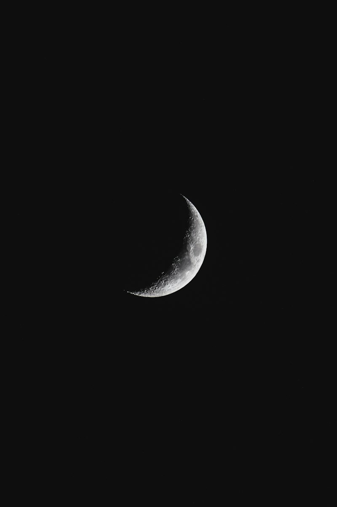
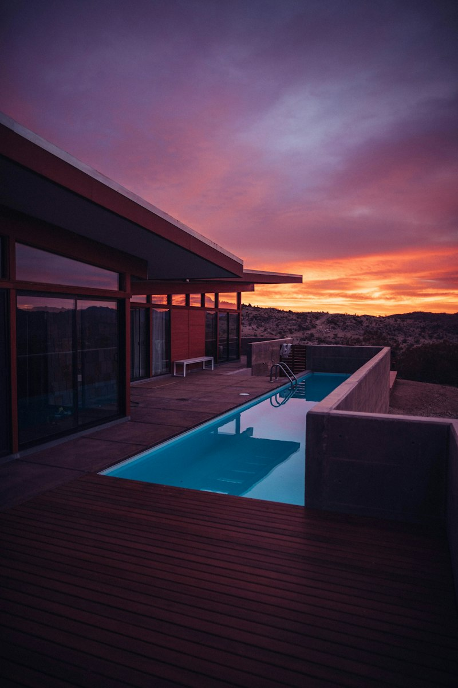
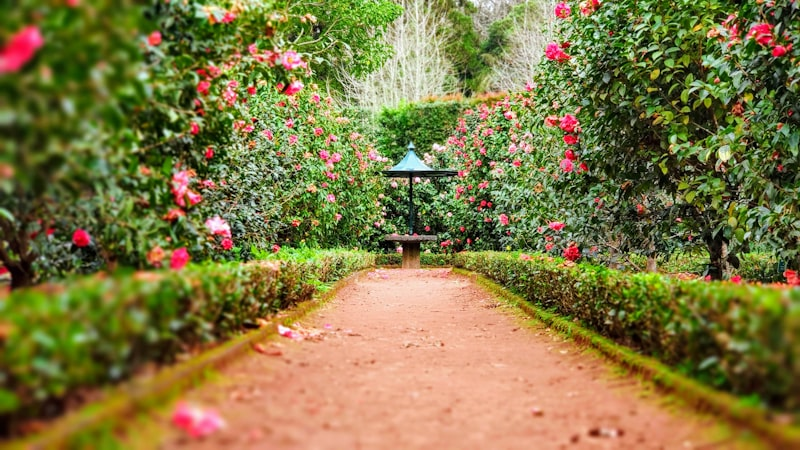

Layanan Jasa Pembuatan & Perawatan Taman
Solusi lanskap menyeluruh dari arsitektur desain 3D, eksekusi pembuatan baru, renovasi taman lama, hingga perawatan berkala.
1. Pembuatan Taman Minimalis Modern
Taman minimalis dirancang untuk pemilik rumah yang mendambakan tampilan halaman yang bersih, teratur, elegan, dan tidak membutuhkan perawatan yang rumit. Menitikberatkan pada perpaduan kontras antara hamparan rumput hijau, batu koral, dan tanaman aksen arsitektural.
Spesifikasi Termasuk:
- ✓ Pemilihan rumput: Rumput Gajah Mini atau Rumput Zoysia (Jepang) kualitas super.
- ✓ Tanaman perdu: Sikas revoluta, Philodendron burlemarx, Agave attenuata, Lili paris.
- ✓ Hardscape: Stepping stone andesit bakar anti-licin & taburan batu koral kupang putih.
- ✓ Media tanam: Tanah subur humus murni dicampur pupuk kandang matang & pasir malang.

2. Taman Kering (Dry / Japanese Zen Garden)
Sangat ideal bagi halaman belakang (backyard), void tengah rumah (inner courtyard), atau area bawah tangga yang minim sinar matahari penuh. Taman kering menghadirkan atmosfer ketenangan (zen) yang meditatif tanpa resiko genangan air atau tanah becek.
Spesifikasi Termasuk:
- ✓ Geotextile underlayer penahan rumput liar agar kerikil tidak bercampur tanah.
- ✓ Hamparan batu split putih, kerikil koral alor hitam, dan pasir silika berpola.
- ✓ Tanaman ikonik: Bonsai Beringin Korea, Serut, Bambu jepang, atau Monstera deliciosa.
- ✓ Ornamen: Lentera batu gaya Jepang (Toro lantern), gentong air bambu, atau stepping slab.
3. Vertical Garden (Living Green Wall)
Ubah tembok pagar atau dinding samping rumah yang polos menjadi mahakarya hijau menyejukkan. NusaGarden menerapkan teknologi kantong felt fabric berpori tinggi dengan rangka hollow galvanis anti-karat dan sistem fertigasi otomatis.
Spesifikasi Termasuk:
- ✓ Struktur rangka hollow galvanis & polycarbonate sheet pelindung kelembapan dinding.
- ✓ Kantong tanam Geotextile Felt tebal berkualitas tinggi tahan lapuk 10+ tahun.
- ✓ Sistem otomatis drip irrigation (selang tetes) lengkap dengan timer controller digital.
- ✓ Komposisi variasi tanaman: Neoregelia, Sirih Gading, Pakis Boston, Kadaka, Spider Plant.


4. Kolam Koi Minimalis & Water Fountain
Suara gemericik air terbukti secara ilmiah mampu meredakan stres harian. Kami membuat kolam koi modern dengan jaminan air bening kristal berkat sistem sirkulasi 4-chamber filtrasi biologis dan mekanis yang diperhitungkan secara cermat.
Spesifikasi Termasuk:
- ✓ Konstruksi cor beton bertulang K-225 dengan lapisan waterproofing bitumen elastis ganda.
- ✓ Finishing batu alam andesit, batu paras jogja, atau marmer bakar pilihan.
- ✓ Filter chamber terintegrasi (Japmat, bio ball, karang jahe, lampu UV anti-lumut).
- ✓ Pompa submersible hemat listrik bersuara halus & instalasi air terjun (waterfall).
5. Pemeliharaan & Maintenance Berkala
Tidak punya waktu merawat taman sendiri? Serahkan kepada tim gardener ahli kami. Kami menyediakan paket langganan perawatan untuk memastikan taman Anda selalu hijau segar, bebas hama, dan rumput terpangkas rapi.
Cakupan Pekerjaan Maintenance:
- ✓ Pemotongan & perapihan rumput (lawn mowing).
- ✓ Pemangkasan daun kering & pembentukan tajuk pohon perdu (pruning).
- ✓ Pemupukan NPK berimbang & suplemen daun organik.
- ✓ Pengendalian hama kutu putih, ulat, dan jamur dengan fungisida aman.
- ✓ Pembersihan chamber filter kolam dan penambahan bakteri pengurai.

Paket Pembuatan Taman Rumah Populer
Pilihan paket lengkap all-in (sudah termasuk bibit, tanah, ongkos tukang & pembersihan) untuk luas area tertentu.
Halaman Mungil (10 - 15 m²)
Cocok untuk rumah cluster atau taman depan rumah minimalis.
- ✓ Rumput gajah mini / zoysia 12 m²
- ✓ 8 jenis tanaman perdu & border
- ✓ 1 pohon peneduh / tabebuya 1.5m
- ✓ Stepping stone andesit 5 pcs
- ✓ Garansi tanaman 30 hari
Halaman Sedang (20 - 35 m²)
Solusi komplit untuk halaman depan & samping bernuansa asri.
- ✓ Gratis Desain 3D Visualisasi
- ✓ Rumput jepang super 25 m²
- ✓ 1 pohon kamboja bali / palem kenari 2.5m
- ✓ 20 tanaman hias berkarakter
- ✓ Taburan batu koral putih & stepping stone
- ✓ Lampu sorot LED waterproof 2 titik
- ✓ Garansi tanaman 60 hari
Custom Arsitektur (40+ m²)
Desain khusus terpadu dengan kolam koi, gazebo, dan lighting arsitektural.
- ✓ Konsultasi langsung Arsitek Lanskap Senior
- ✓ Desain 3D Render & Video Walkthrough
- ✓ Pilihan kolam koi minimalis / relief tebing
- ✓ Sistem irigasi sprinkler otomatis terintegrasi
- ✓ Tanaman koleksi eksklusif & bonsai juara
- ✓ Garansi resmi 60 hari + 1x Free Maintenance